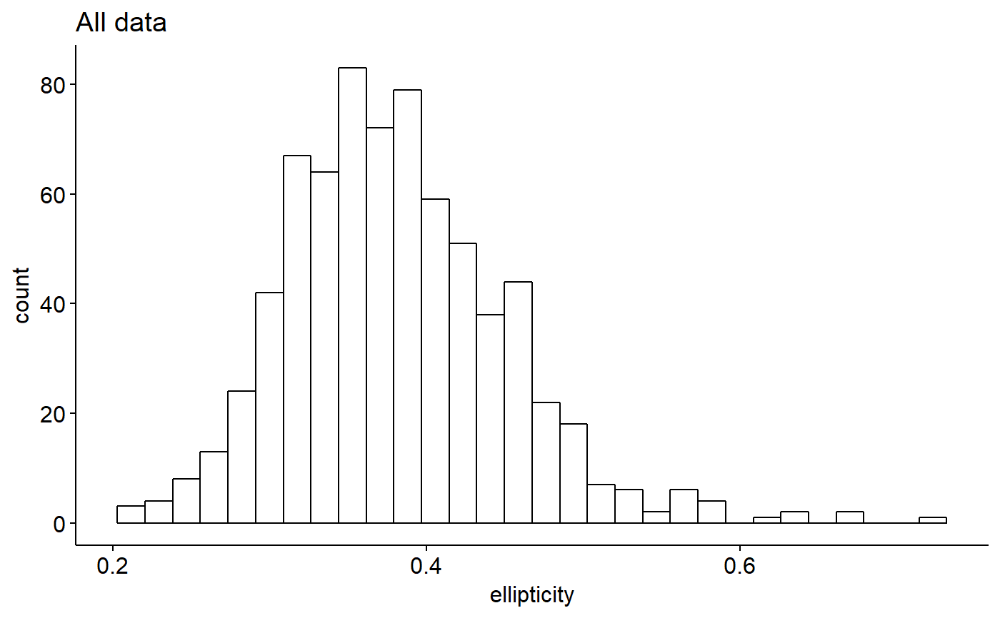
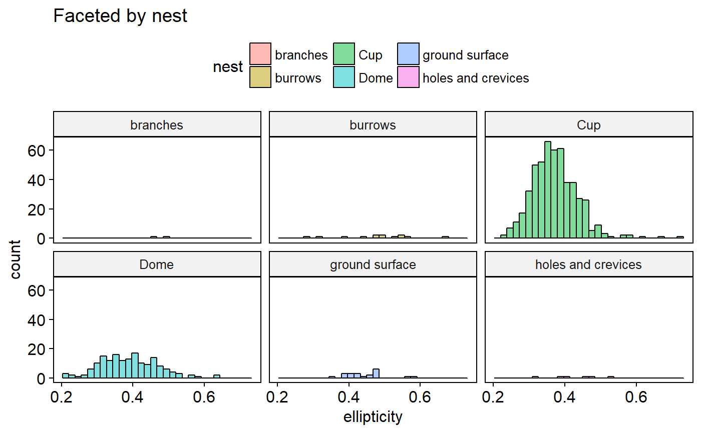
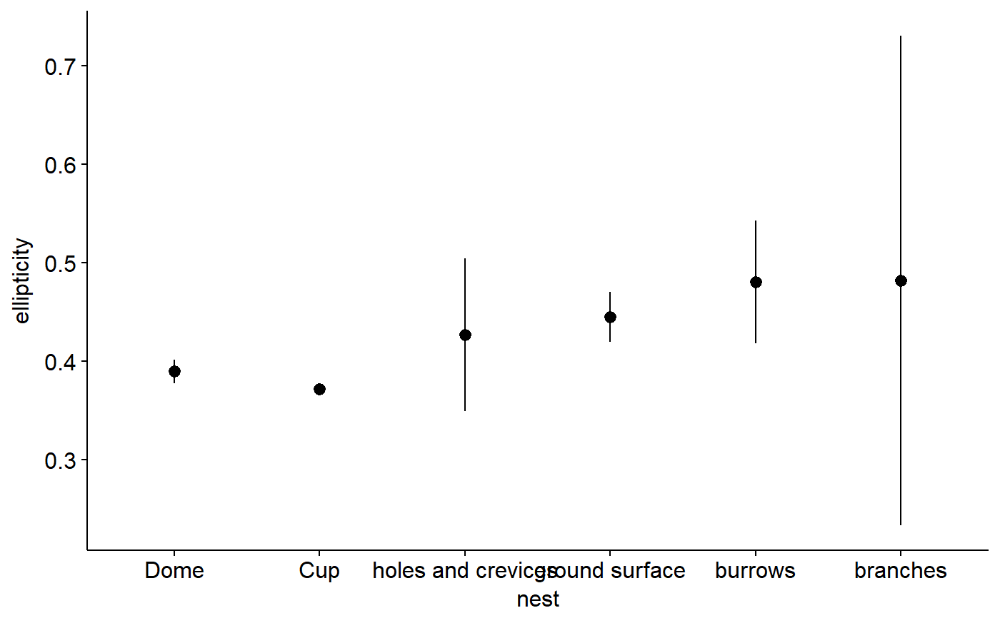

Egg data combined with data on nests
eggs_and_nests.RdEgg data combined with data on nests
eggs_and_nests
Format
A data frame
- family
Taxonomic family
- order
Taxonomic order
- spp
Genus and species
- asymmetry
Index of how asymmetric an egg is
- ellipticity
Index of how elliptical an egg is
- ave.length.com
Mean length of egg
- nest
nest type of species
- source
author
- bird.ellipticity
ellipticity of bird in grams
References
....
Examples
library(ggplot2) library(ggpubr) ## Explore data graphically ### Plot boxplots ggboxplot(data = eggs_and_nests, y = "ellipticity", x = "nest", fill = "nest")#> Warning: Using `bins = 30` by default. Pick better value with the argument `bins`.gghistogram(data = eggs_and_nests, x = "ellipticity", facet.by = "nest", fill = "nest", title = "Faceted by nest")#> Warning: Using `bins = 30` by default. Pick better value with the argument `bins`.## Plot means with 95% confidence intervals ggerrorplot(eggs_and_nests, x = "nest", y = "ellipticity", desc_stat = "mean_ci", add = "mean")## 1-way ANOVA ### null model model.null <- lm(ellipticity ~ 1, data = eggs_and_nests) ### model of interest model.alt <- lm(ellipticity ~ nest, data = eggs_and_nests) ### compare models anova(model.null, model.alt)#> Analysis of Variance Table #> #> Model 1: ellipticity ~ 1 #> Model 2: ellipticity ~ nest #> Res.Df RSS Df Sum of Sq F Pr(>F) #> 1 721 3.5560 #> 2 716 3.2544 5 0.30153 13.268 2.212e-12 *** #> --- #> Signif. codes: 0 '***' 0.001 '**' 0.01 '*' 0.05 '.' 0.1 ' ' 1## Pairwise comparisons after 1-way ANOVA ### no corrections for multiple comparisons pairwise.t.test(x = eggs_and_nests$ellipticity, g = eggs_and_nests$nest, p.adjust.method = "none")#> #> Pairwise comparisons using t tests with pooled SD #> #> data: eggs_and_nests$ellipticity and eggs_and_nests$nest #> #> branches burrows Cup Dome ground surface #> burrows 0.97676 - - - - #> Cup 0.02170 1.5e-08 - - - #> Dome 0.05491 3.5e-06 0.00329 - - #> ground surface 0.46012 0.13746 1.4e-06 0.00042 - #> holes and crevices 0.31689 0.10739 0.04834 0.18610 0.55863 #> #> P value adjustment method: none### Bonferonni correction pairwise.t.test(x = eggs_and_nests$ellipticity, g = eggs_and_nests$nest, p.adjust.method = "bonferroni")#> #> Pairwise comparisons using t tests with pooled SD #> #> data: eggs_and_nests$ellipticity and eggs_and_nests$nest #> #> branches burrows Cup Dome ground surface #> burrows 1.0000 - - - - #> Cup 0.3256 2.3e-07 - - - #> Dome 0.8236 5.3e-05 0.0493 - - #> ground surface 1.0000 1.0000 2.1e-05 0.0062 - #> holes and crevices 1.0000 1.0000 0.7251 1.0000 1.0000 #> #> P value adjustment method: bonferroni## Tukey test ### re-fit model with aov() model.alt.aov <- aov(ellipticity ~ nest, data = eggs_and_nests) ### TukeyHSD() on model from aov() TukeyHSD(model.alt.aov)#> Tukey multiple comparisons of means #> 95% family-wise confidence level #> #> Fit: aov(formula = ellipticity ~ nest, data = eggs_and_nests) #> #> $nest #> diff lwr upr #> burrows-branches -0.001492308 -0.1478176897 0.14483307 #> Cup-branches -0.109886719 -0.2463740344 0.02660060 #> Dome-branches -0.092205357 -0.2292353178 0.04482460 #> ground surface-branches -0.036871429 -0.1794321827 0.10568933 #> holes and crevices-branches -0.055133333 -0.2124283927 0.10216173 #> Cup-burrows -0.108394411 -0.1624989507 -0.05428987 #> Dome-burrows -0.090713049 -0.1461722598 -0.03525384 #> ground surface-burrows -0.035379121 -0.1033650201 0.03260678 #> holes and crevices-burrows -0.053641026 -0.1487212527 0.04143920 #> Dome-Cup 0.017681362 0.0005526165 0.03481011 #> ground surface-Cup 0.073015290 0.0301229553 0.11590763 #> holes and crevices-Cup 0.054753385 -0.0243536274 0.13386040 #> ground surface-Dome 0.055333929 0.0107449704 0.09992289 #> holes and crevices-Dome 0.037072024 -0.0429676056 0.11711165 #> holes and crevices-ground surface -0.018261905 -0.1074398211 0.07091601 #> p adj #> burrows-branches 1.0000000 #> Cup-branches 0.1950900 #> Dome-branches 0.3889850 #> ground surface-branches 0.9770011 #> holes and crevices-branches 0.9174222 #> Cup-burrows 0.0000002 #> Dome-burrows 0.0000518 #> ground surface-burrows 0.6727661 #> holes and crevices-burrows 0.5907892 #> Dome-Cup 0.0384537 #> ground surface-Cup 0.0000208 #> holes and crevices-Cup 0.3561386 #> ground surface-Dome 0.0055542 #> holes and crevices-Dome 0.7719777 #> holes and crevices-ground surface 0.9920083 #>### Plot effect sizes plotTukeysHSD(TukeyHSD(model.alt.aov))#> Error in plotTukeysHSD(TukeyHSD(model.alt.aov)): object 'x.values' not found